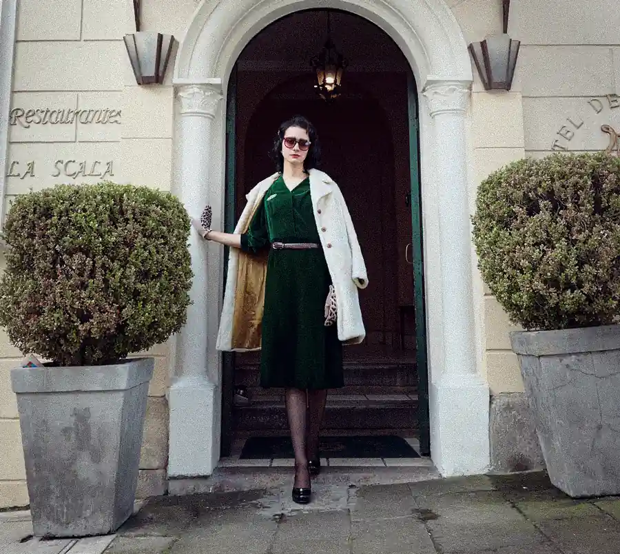

Editorial Brand Photography
Editorial, story-led photography created for brands that want to be seen with intention. From fashion campaigns to lifestyle imagery, each shoot is designed to capture the identity, energy, and presence behind what you create.